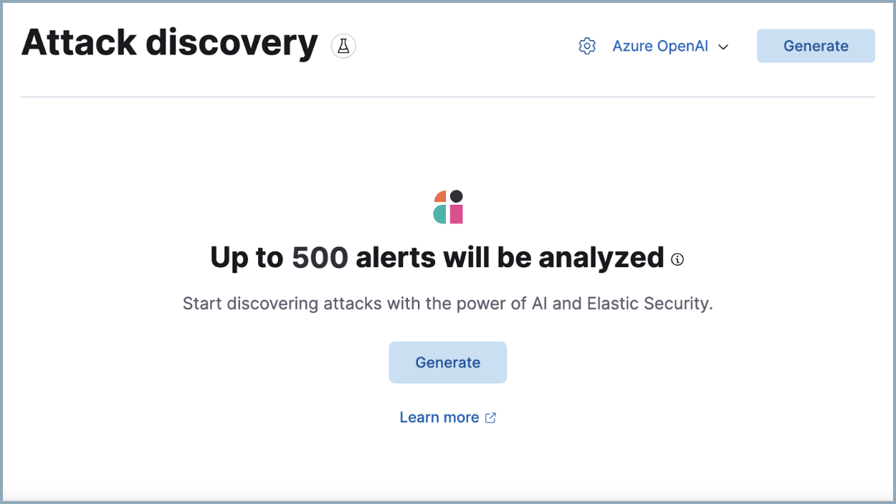

Attack Discovery
editThis feature is in technical preview. It may change in the future, and you should exercise caution when using it in production environments. Elastic will work to fix any issues, but features in technical preview are not subject to the support SLA of GA features.
Attack Discovery leverages large language models (LLMs) to analyze alerts in your environment and identify threats. Each "discovery" represents a potential attack and describes relationships among multiple alerts to tell you which users and hosts are involved, how alerts correspond to the MITRE ATT&CK matrix, and which threat actor might be responsible. This can help make the most of each security analyst’s time, fight alert fatigue, and reduce your mean time to respond.
For a demo, refer to the following video.

This page describes:
Role-based access control (RBAC) for Attack Discovery
editThe Attack Discovery: All privilege allows you to use Attack Discovery.
Generate discoveries
editWhen you access Attack Discovery for the first time, you’ll need to select an LLM connector before you can analyze alerts. Attack Discovery uses the same LLM connectors as AI Assistant. To get started:
- Click the Attack Discovery page from Elastic Security’s navigation menu.
-
Select an existing connector from the dropdown menu, or add a new one.
 - Once you’ve selected a connector, click Generate to start the analysis.
It may take from a few seconds up to several minutes to generate discoveries, depending on the number of alerts and the model you selected.
By default, Attack Discovery analyzes up to 100 alerts within this timeframe, but you can expand this up to 500 by clicking the settings icon ( ) next to the model selection menu and adjusting the Alerts slider. Note that sending more alerts than your chosen LLM can handle may result in an error.
) next to the model selection menu and adjusting the Alerts slider. Note that sending more alerts than your chosen LLM can handle may result in an error.

Attack Discovery uses the same data anonymization settings as Elastic AI Assistant. To configure which alert fields are sent to the LLM and which of those fields are obfuscated, use the Elastic AI Assistant settings. Consider the privacy policies of third-party LLMs before sending them sensitive data.
Once the analysis is complete, any threats it identifies will appear as discoveries. Click each one’s title to expand or collapse it. Click Generate at any time to start the Attack Discovery process again with the most current alerts.
What information does each discovery include?
editEach discovery includes the following information describing the potential threat, generated by the connected LLM:
- A descriptive title and a summary of the potential threat.
- The number of associated alerts and which parts of the MITRE ATT&CK matrix they correspond to.
- The implicated entities (users and hosts), and what suspicious activity was observed for each.
Incorporate discoveries with other workflows
editThere are several ways you can incorporate discoveries into your Elastic Security workflows:
- Click an entity’s name to open the entity details flyout and view more details that may be relevant to your investigation.
-
Hover over an entity’s name to either add the entity to Timeline (
 ) or copy its field name and value to the clipboard (
) or copy its field name and value to the clipboard ( ).
).
- Click Take action, then select Add to new case or Add to existing case to add a discovery to a case. This makes it easy to share the information with your team and other stakeholders.
- Click Investigate in timeline to explore the discovery in Timeline.
- Click View in AI Assistant to attach the discovery to a conversation with AI Assistant. You can then ask follow-up questions about the discovery or associated alerts.